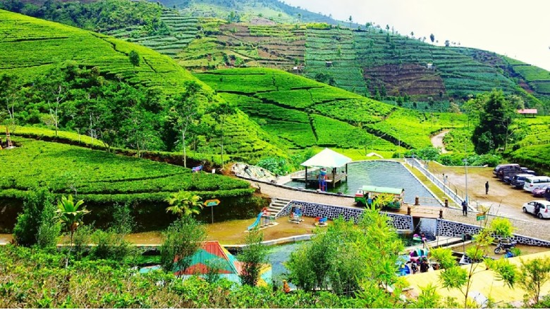
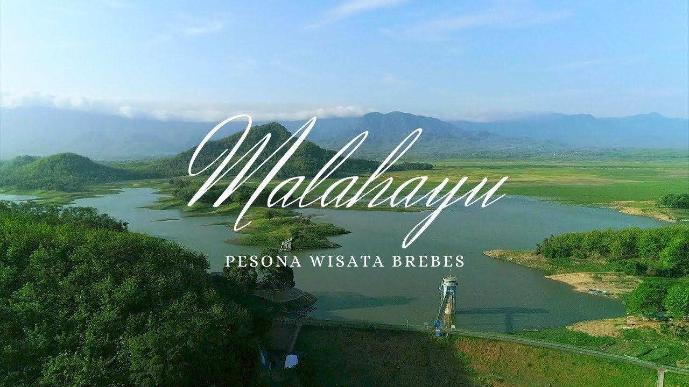
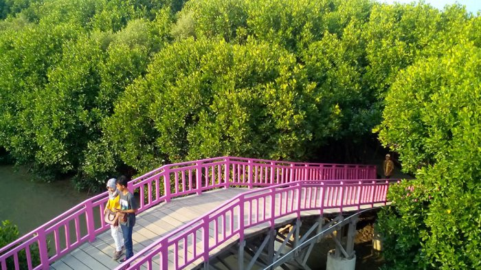
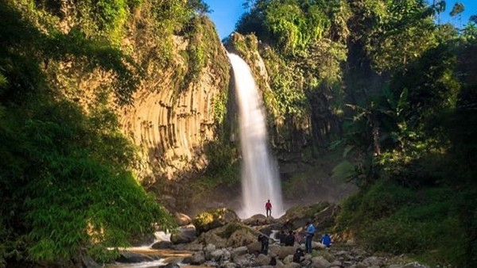
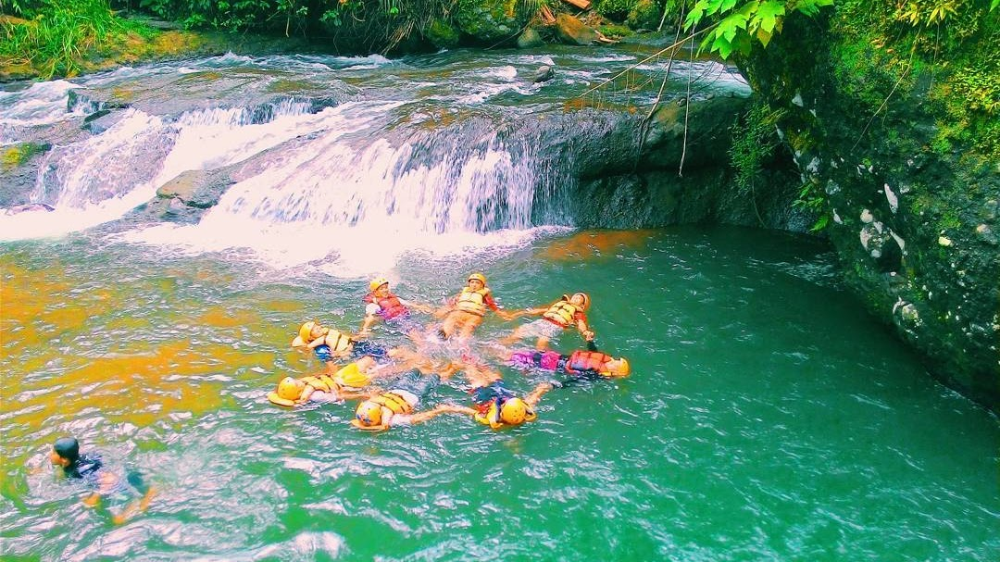
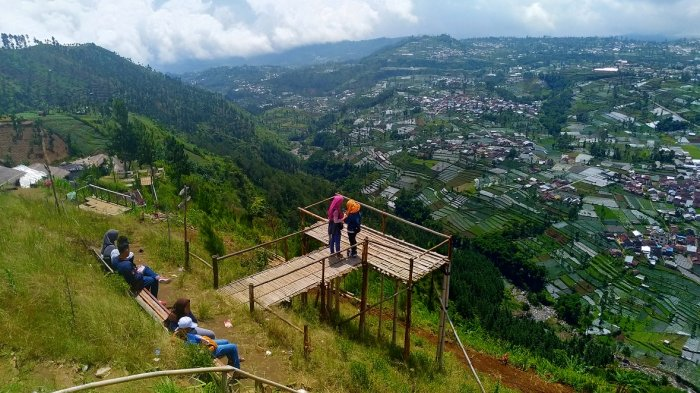

1
Kebun Teh Kaligua
Agrowisata Kebun Teh Kaligua merupakan kawasan "Puncak" nya Brebes. Pasalnya, Agrowisata ini memiliki pemandangan alam yang sangat mirip dengan pemandangan alam yang ditawarkan oleh kawasan puncak di Bogor.
Disini, Anda dapat menikmati sejuknya udara khas dataran tinggi sembari memanjakan mata anda dengan melihat hijaunya alam sekitar.
Jika anda berminat untuk mengunjunginya, harga tiket masuknya murah yaitu Rp.10.000 Saja
Lokasi : Desa Pandansari, Kec. Paguyangan. Kab. Brebes.
Kaliguwa . Wisata . Brebes
Jan 1, 2022
36 comments
by Admin

2
Waduk Malahayu
Anda dapat melihat indahnya kawasan perbukitan yang ada di sebelahnya, selain sebagai tempat wisata, waduk ini sering dijadikan tempat kemah
Wisata ini sering dijadikan tempat spot pemancingan juga loh! Cocok nih bagi anak muda yang suka olahraga memancing, ini sangat rekomendasi banget!
Jika anda berminat untuk mengunjunginya tentunya sangat rekomendasi, dan tentunya harga tiket masuknya murah yaitu Rp.6.000 Saja
Lokasi : Desa Malahayu, Kec. Banjarharja. Kab. Brebes.
Malahayu . Wisata . Brebes
Jan 1, 2022
48 comments
by Admin

Hutan Mangrove Kaliwlingi
Hutan Mangrove ini merupakan hutan mangrove milik pemerintah yang sengaja dibuat untuk pencegahan abrasi diarea pesisir Kab. Brebes.
Walaupun tujuan utama bukan untuk pariwisata, namun banyak pariwisata banyak yang datang ke tempat ini, dan ahkirnya tempat ini tidak sebagai abrasi saja, melainkan dimanfaatkan untuk objek wisata juga
Untuk bisa menikmatinya keindahan alam di hutan mangrove ini, anda perlu mengeluarkan uang sebesar Rp. 20.000, anda sudah bisa berkeliling ditempat ini sepuasnya
Lokasi : Desa Dukuh Pandansari, Kec. Brebes. Kab. Brebes.
Mangrove . Pariwisata . Brebes
Jan 1, 2022
24 comments
by Admin

Curug Putri Asri Brebes
Curug ini memiliki ketinggian sekitar 35 meters dengan aliran air yang cukup deras. Secara Keseluruhannya, kondisi lingkungan ini curug ini masih terbilang cukup asri
Lokasi air terjun ini masih agak susah untuk di akses. Untuk bisa sampai sana, pengunjung harus berjalan kaki melalui medan perjalanan yang cukup menantang
Melelahkan memang, akan tetapi apabila sampai sana maka akan sangat membuat kita puas dan akan lupa lelahnya. Untuk tiket masuk sendiri itu gratis.
Lokasi : Desa Mandala, Kec. Sirampog. Kab. Brebes.
Curug . PutriAsri . Brebes
Jan 1, 2022
72 comments
by Admin

Air Terjun Ranto Canyo
Air terjun ini menarik daya utama berupa panorama alam berbentuk air terjun serta kawasan pemandian yang memacu adrenalin
Untuk bisa sampai kesana, anda harus berjalan kaki melintasi alam terbuka sejauh kurang lebih 1 kilometers.
Agar tidak tersesat anda bisa menggunakan jasa pemandu jalan, Yakni hanya Rp. 30.000 per orang dan sudah termasuk perlengkapan safety berupa helm dan pelampung, Bagaimana? Menarik bukan?
Lokasi : Desa Winduasri, Kec. Salem. Kab. Brebes.
Air terjun . Pariwisata . Brebes
Jan 1, 2022
84 comments
by Admin

Bukit Baper Menawan
Kamu orang baperan? ini tempatnya yang cocok bagi kamu yang sedang baper dengan pasangan loh.
Perpaduan keindahan alam Brebes berupa pemukan warga yang di warnai aliran sungai, hutan pinus, dan juga persawahan. membuat mata kamu akan terpukau melihatnya
Jika ingin datang kesini, sebaiknya sore hari atau malam hari untuk mendapatkan momen terbaik. dimana kamu akan disuguhi moment sunset hingga city light yang menawan
Lokasi : Desa Batursari, Kec. Sirampog. Kab. Brebes.
Bukit . Baper . Brebes
Jan 1, 2022
96 comments
by Admin